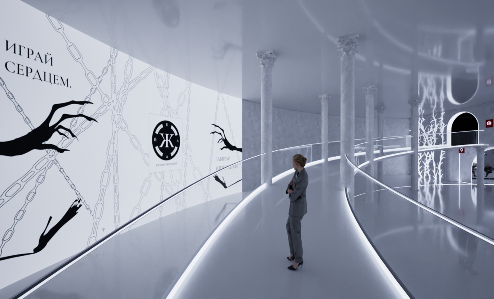
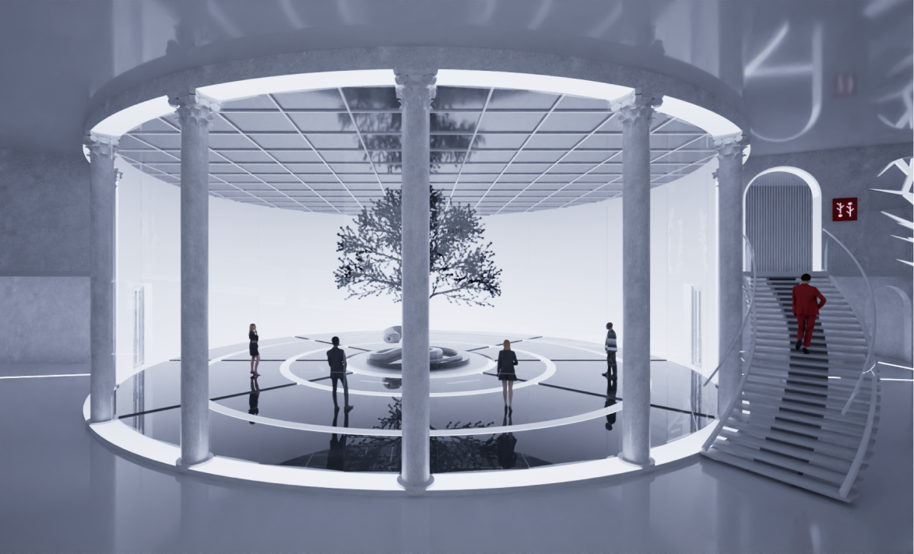
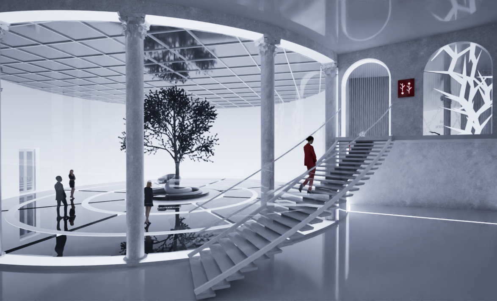
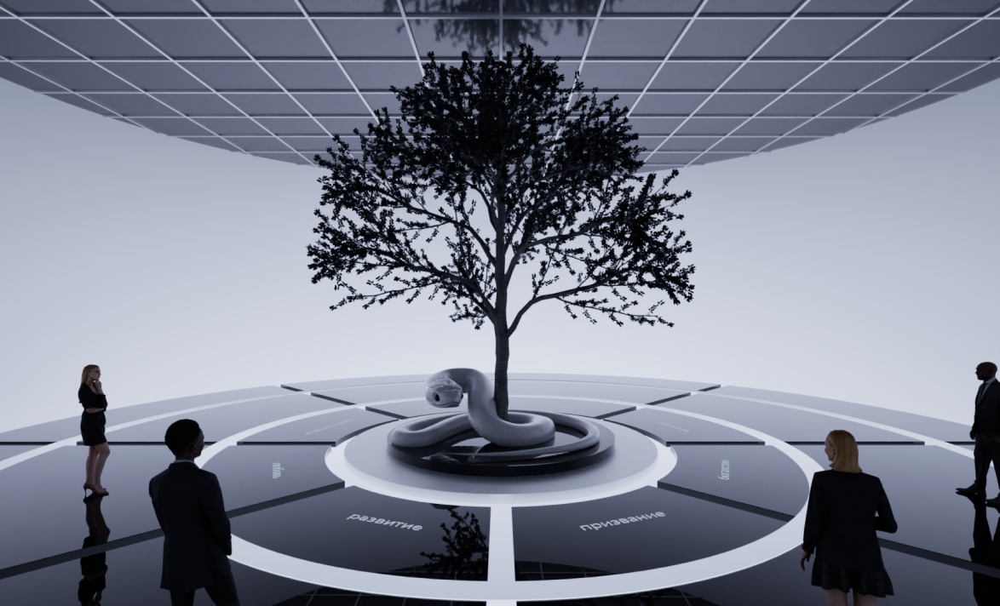
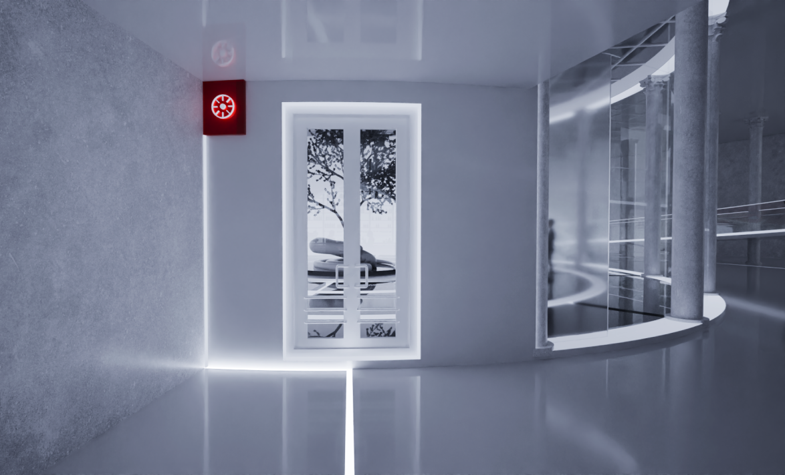

Белый зал — сердце первого этажа, место, где «ЖЕЛАЙ» впервые говорит с человеком напрямую. На полу — сферы жизни колеса баланса с подписями. В центре стоит дерево, обвитое змеёй — маскот «ЖЕЛАЙ»: рост и искушение сцеплены в один знак, красивый и недвусмысленный.
Зал визуализирует колесо баланса и подводит гостя к формулировке желания.




